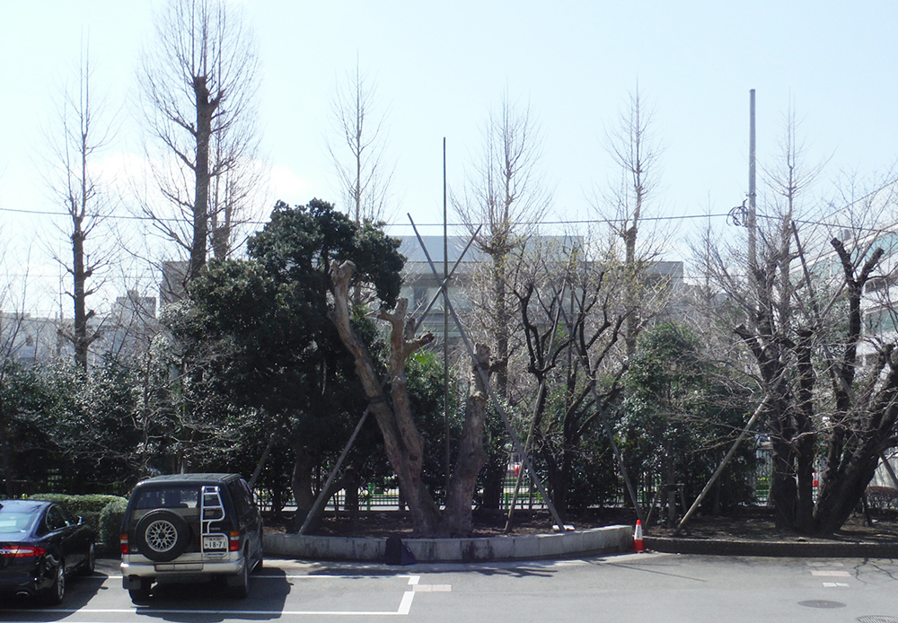
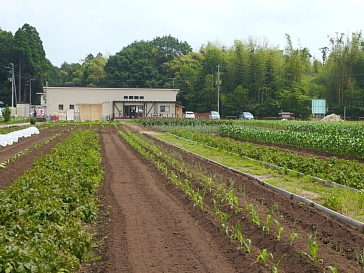
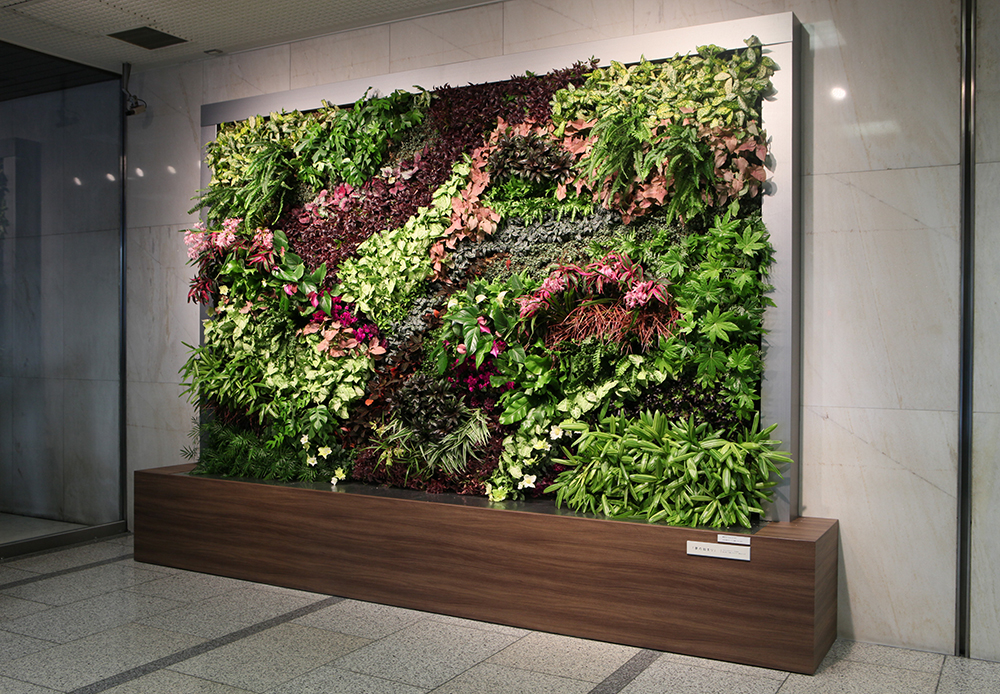
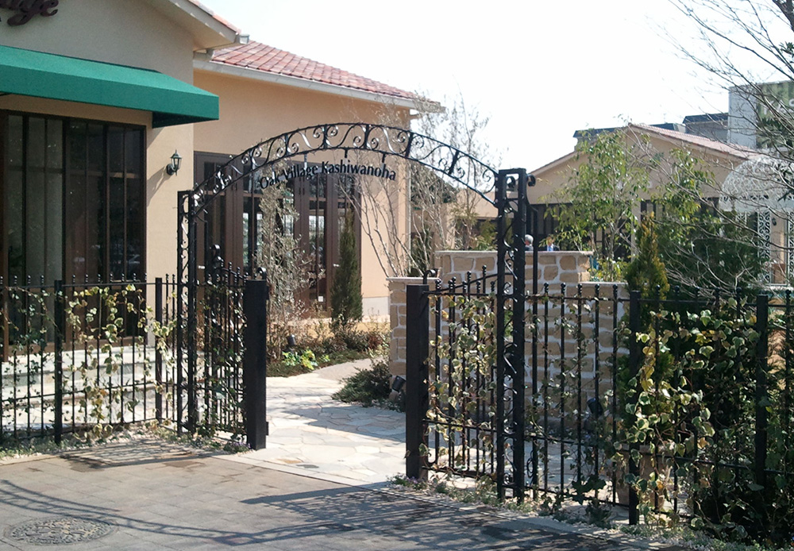
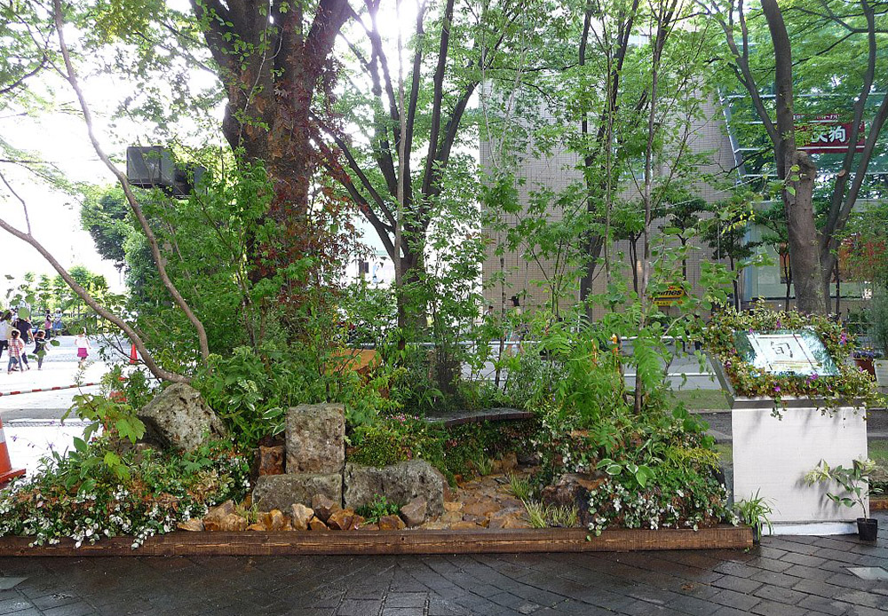

Others

「SEGES:シージェス(社会・環境貢献緑地評価システム）：都市のオアシス（2016年)」認定サイト
竣工：2016年（植栽工事）
所在地：東京都中央区
事業主：東急不動産
担当業務：実施設計、施工（植栽工事）
【季節変化と植物の多様性を演出する“緑絵巻”】
東京・銀座の地上60ｍという立地における最大級のパネル型壁面緑化。
花の咲く時期や紅葉などの季節変化、各々の植物が有する色彩の多様性を横長に連続したパネルで表現している。

品川区「みどりの顕彰制度」 緑化賞（2017年)
JBIB「いきもの共生事業所認証」（2015年)
竣工：2015年（植栽工事）
所在地：東京都品川区
事業主：東急不動産
担当業務：設計施工（植栽工事）
【居住者や周辺地域とシェアするガーデン】
計画の際に周辺地域の生態系調査を実施し、周辺の生きものが好む樹種を選定。
生きものに配慮することで、在来種の採用や高木～低木～草本層を取り入れた階層性のある植栽を施している。

屋内緑化コンクール2014 社団法人日本インドア・グリーン協会理事長賞（2014年)
竣工：2013年（室内緑化・壁面緑化工事）
所在地：東京都渋谷区
事業主：東急不動産
担当業務：計画、設計施工（室内緑化・壁面緑化工事）
【季節変化と安らぎを与える室内型壁面緑化】
弊社特殊緑化工法であるアースウォールの室内型壁面緑化。季節にあわせた植物やテーマ性のある装飾が来訪者を華やかに出迎える。

都市公園等コンクール「特定テーマ部門」 国土交通省都市局長賞（2016年)
竣工：2013年
所在地：東京都世田谷区
事業主：世田谷区
担当業務：施工（造園工事）
【世田谷区の自然に回帰する】
世田谷の風土を活かした人間が自然環境に関わり、共生する世田谷・武蔵野の庭。
ユニバーサルデザインを基調とし、誰もが日本の空間文化を楽しめる新しいタイプの庭園である。

屋上・壁面・特殊緑化技術コンクール 壁面・特殊緑化部門 都市緑化機構会長賞（2014年)
竣工：2013年（特殊緑化工事）
所在地：東京都千代田区
事業主：東急不動産
担当業務：計画、設計施工（特殊緑化工事）
【自然の彩りが連続する空中庭園の演出】
バイオキューブを連続配置し、里山に見られる草花を植えることで四季折々の彩りが連なる景観を創出している。
また、みどりのカーテンとなるクライムサポートや誘引緑化フェンスにより周辺からの景観に配慮した。